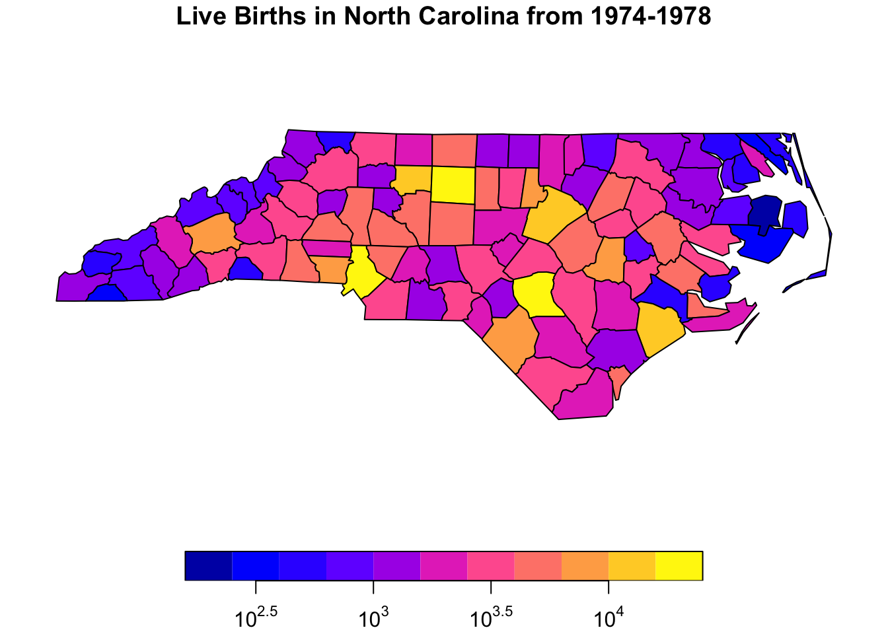

Each R help file has a standard set of sections. Not every help file will have every section, but all help files will have the starred sections in the list below. The sections of an R help file in order are:
Let’s take a look at each section you might find in a help file.
Title
This is the section at the top of the help file and tells you the name of the documentation page you are looking at as well as the package the documentation file is from (enclosed in {}). It also displays a very brief summary of what the function does in large lettering. Importantly, the title section is a good place to figure out what package a particular function lives in.
If the package that contains the function is the “base” package, that means it is a part of “base” R, or the the set of functions and classes available to you whenever you open an R session. The packages stats, graphics, utils, datasets, methods, and grDevices are also always loaded whenever you open an R session, so you don’t need to call them with require() or library().
Description
The Description section gives a more detailed description of what the function or package does. It is useful when trying to determine whether or not a function would suit your needs for a particular task.
Usage
The Usage section is particularly useful for troubleshooting. It is also probably the most difficult to interpret. In general, it gives you information about how to use the function.
Every Usage section will have at least one example function call with all of the named arguments listed out. Arguments with an = after them have a default value. This means you don’t necessarily need to provide a value for that argument when calling the function. However it is important to check that the default value is what you want it to be. If there is no = after the argument, it is a required argument and you will need to provide it each time you call the function. The Usage section does not describe what each argument does. For that, you need to go to the Arguments section, which we will cover next. In general, the Usage and Arguments sections are closely links and I often find myself jumping back and forth between them when trying to understand what a function is doing.
Sometimes developers document multiple functions in a single help file. This is the case for read.table and read.csv, which share a documentation page. Even though two functions share a documentation page, that does not mean they share all the same arguments or default values. For example, the default value for the header argument is FALSE for read.table but TRUE for read.csv.
Sometimes there is more than one example function call for the same for functions with the same name. This is the case for functions with methods for multiple classes of objects. When this happens, the documentation will specify the class the method is for with a comment above the function call. You can see this in the summary() documentation. The help file for summary() lists methods for objects of class data.frame, factor, and matrix. It also lists a default method, for if none of the other methods apply.
Warning
Different methods may have different required arguments and default values. Make sure to use the documentation for the method that corresponds to the class of your first argument.
If we summarize survey data from the General Social Survey as a data.frame, R displays a maximum of 7 different values for categorical variables.
library(forcats)summary(gss_cat)
year marital age race
Min. :2000 No answer : 17 Min. :18.00 Other : 1959
1st Qu.:2002 Never married: 5416 1st Qu.:33.00 Black : 3129
Median :2006 Separated : 743 Median :46.00 White :16395
Mean :2007 Divorced : 3383 Mean :47.18 Not applicable: 0
3rd Qu.:2010 Widowed : 1807 3rd Qu.:59.00
Max. :2014 Married :10117 Max. :89.00
NA's :76
rincome partyid relig
$25000 or more:7363 Independent :4119 Protestant:10846
Not applicable:7043 Not str democrat :3690 Catholic : 5124
$20000 - 24999:1283 Strong democrat :3490 None : 3523
$10000 - 14999:1168 Not str republican:3032 Christian : 689
$15000 - 19999:1048 Ind,near dem :2499 Jewish : 388
Refused : 975 Strong republican :2314 Other : 224
(Other) :2603 (Other) :2339 (Other) : 689
denom tvhours
Not applicable :10072 Min. : 0.000
Other : 2534 1st Qu.: 1.000
No denomination : 1683 Median : 2.000
Southern baptist: 1536 Mean : 2.981
Baptist-dk which: 1457 3rd Qu.: 4.000
United methodist: 1067 Max. :24.000
(Other) : 3134 NA's :10146
However, if we summarize one column of the data set, the summary() function displays many more categories.
summary(gss_cat$relig)
No answer Don't know Inter-nondenominational
93 15 109
Native american Christian Orthodox-christian
23 689 95
Moslem/islam Other eastern Hinduism
104 32 71
Buddhism Other None
147 224 3523
Jewish Catholic Protestant
388 5124 10846
Not applicable
0
Going back to the documentation for summary(), we can see that for a data.frame the default value for maxsum is 7, while for a factor, the default value for maxsum is 100. Now, this is one difference between these two methods, but to determine if this is the reason the outputs are different, we will need to refer to the Arguments section.
Arguments
The Arguments section lists out the name each argument to the function, the required class for that argument, and a description of what the argument does. It is probably the section I use most commonly use when troubleshooting. If there are multiple functions listed in the Usage section, it is possible not every function will use every argument. You will need to refer to the Usage section to determine if a given argument applies to the function you are using.
To figure out what the maxsum argument actually does, we refer to the arguments section of the summary() help file. This tells us that maxsum determines the maximum number of values that should be displayed for factors. This matches the change in behavior we saw in summary() above.
The … Argument
You may see ... as one of the arguments in the Arguments and Usage sections. This is the exception to the rule that all arguments R functions are named. This “argument” allows you to pass arguments to the function that are not explicitly listed in the function’s documentation. This is typically done for two reasons.
First, the function’s author many not want to restrict the number of arguments you can provide to the function. This is the case for functions like sum() and data.frame(). It would be very inconvenient if the R developers restricted the number of columns you could create a data.frame with.
sum(1:10, 99, 21:91, -39:45)
[1] 4385
data.frame(1:12, month.name, month.abb)
X1.12 month.name month.abb
1 1 January Jan
2 2 February Feb
3 3 March Mar
4 4 April Apr
5 5 May May
6 6 June Jun
7 7 July Jul
8 8 August Aug
9 9 September Sep
10 10 October Oct
11 11 November Nov
12 12 December Dec
Second, the author of a given function may want to allow other packages to expand the use cases of that function. However, the original author won’t necessarily know what arguments will be useful for future R developers. So instead, they can include ... as an argument, and then other packages can define additional arguments that will be useful to them.
The plot() function is one example of this. If you look at the documentation for the generic plot() function, you can see that there are only a few arguments listed, and they seemed to be geared toward X-Y plotting. This is very useful, but it is definitely not the only type of plotting you may want to do.
Many different types of objects benefit from visualization, including ones that don’t neatly fit into the X-Y paradigm. It is very common that packages will define a new class of object to accomplish a particular goal and want to visualize those object in some way. Instead of creating an entirely new function to visualize their new objects, the package’s creator can create a new method for plot(). This is useful because it standardizes the way we visualize things, and it reduces the amount of work the developer needs to do.
The sf package uses this functionality. The sf package defines the sf class, which stores geographical information, like the counties of North Carolina. This is the type of data we use can to make maps.
library(sf)#read in North Carolina datanc =st_read(system.file("shape/nc.shp", package="sf"), quiet =TRUE)#class of data created using sf packageclass(nc)
If we open up the R help file for plot after loading sf using ?plot, we have the option to select documentation for the plot function in the sf package by clicking on the link labeled “plot sf object”. In the sf::plot help page there are many more arguments listed in the Usage and Arguments sections. In particular, we can specify the position of the key (legend), plot the data on a log scale, and add a title.
plot_title ='Live Births in North Carolina from 1974-1978'plot(nc['BIR74'], key.pos=1, logz=TRUE, main=plot_title)

Details
(optional)
The this section generally contains information that is important but may not clearly fit in any of the other sections. It is often where I go looking for help when I run into a problem that I can’t easily solve. Details covers the “behavior” of a function, or how a function accomplishes its task. This is especially important for functions that “behave” differently when you change the value of certain arguments. The help file for the covariance and correlation functions (cov and cor) is one example of this. The Details section describes how the functions work for each of the five options for the use argument. This includes telling you that one of them (“pairwise.complete.obs”) only works if you use method="pearson". If the function in question implements a mathematical formula, the Details section may also include the formula, like in the case of ?dist.
Value
(almost always present)
The Value section tells you what a function will return after it completes. If you save the output of the function to a variable, this is the information that will be stored in the variable. The Value section will generally specify the class of the object as well the information the object contains. Some functions do not return a value. If this is the case, the Value section may specify that the function doesn’t return anything or the Value section may be missing. Just because something displays in your console after running a function does not mean R returned anything. This is true for the function str().
Note
(optional)
The Note section is a second Details section for less critical pieces of information. You may find information here useful for troubleshooting if the Details section does not solve your problem. In the help file for the data.frame() function, it tells us that if we need code to be compatible with versions of R earlier than R 2.4.0, the class of our row.names argument needs to be a character vector.
Author(s)
(optional)
The Authors(s) section lists the authors who wrote the function or package in question. It is more common to see for packages but there are some functions that mention specific authors as well, as is the case for lm().
References
(optional)
If the function implements a formula, statistical method, algorithm, procedure, or data structure developed elsewhere, the References section will include the citation for the original source. For example, the References section for data.frame() cites a textbook on the S programming language, R’s precursor.
See Also
(optional)
If the function whose documentation you are reviewing doesn’t do exactly what you want, the See Also section is a good section to peruse. See Also contains links to the documentation files for functions that are similar to the function to the function you are investigating. This could include functions that implement a modified formula (like weighted means), or methods that are implemented for a different class like the summary method for a linear regression model (lm) object. It also may include methods that can be used with a given class of object, like in the case of the lm() help file.
Examples
(almost always present)
The Examples section is by far the most useful section for beginners. It contains example code that can be run on any computer without loading any additional packages or data. You can copy and paste it into your console and it should just work. It is a great place to start if you have absolutely no experience with a function or package, or if you have tried everything and nothing seems to work. The examples can also help you understand how a function expects the input data to be structured.
Finally, the Examples section can also be a good place to get code to tinker with when trying to understand how a function works. For example, if you don’t understand the description of the digits argument in the summary() documentation, you can use the code in the Examples section as a starting point.
#copied directly from the Examples sectionsummary(attenu, digits =4)
event mag station dist
Min. : 1.00 Min. :5.000 117 : 5 Min. : 0.50
1st Qu.: 9.00 1st Qu.:5.300 1028 : 4 1st Qu.: 11.32
Median :18.00 Median :6.100 113 : 4 Median : 23.40
Mean :14.74 Mean :6.084 112 : 3 Mean : 45.60
3rd Qu.:20.00 3rd Qu.:6.600 135 : 3 3rd Qu.: 47.55
Max. :23.00 Max. :7.700 (Other):147 Max. :370.00
NA's : 16
accel
Min. :0.00300
1st Qu.:0.04425
Median :0.11300
Mean :0.15422
3rd Qu.:0.21925
Max. :0.81000
You can then modify the digits argument to see what effect this has on the function’s output.
summary(attenu, digits =1)
event mag station dist accel
Min. : 1 Min. :5 117 : 5 Min. : 0.5 Min. :0.003
1st Qu.: 9 1st Qu.:5 1028 : 4 1st Qu.: 11.3 1st Qu.:0.044
Median :18 Median :6 113 : 4 Median : 23.4 Median :0.113
Mean :15 Mean :6 112 : 3 Mean : 45.6 Mean :0.154
3rd Qu.:20 3rd Qu.:7 135 : 3 3rd Qu.: 47.5 3rd Qu.:0.219
Max. :23 Max. :8 (Other):147 Max. :370.0 Max. :0.810
NA's : 16
It is rare that the code in the Examples section will do exactly what you want right off the bat. That does not mean the code is not useful. The key is to use this code as a starting point, code that you know runs, and then work from there.